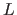
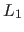
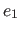
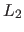
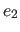
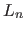
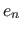

Next: Tabling Up: Assignments and Loops Previous: Example Contents
write_map(Map) =>
foreach (Key=Value in Map)
writef("%w=%w\n",Key,Value)
end.
sum_list(L)=Sum => % returns sum(L)
S=0,
foreach (X in L)
S:=S+X
end,
Sum=S.
read_list=List =>
L=[],
E=read_int(),
while (E != 0)
L := [E|L],
E := read_int()
end,
List=L.
The function read_list reads a sequence of integers into a list, terminating when 0 is read. The loop corresponds to the following sequence of recurrences:
=[]Note that the list of integers is in reversed order. If users want a list in the same order as the input, then the following loop can be used:
=[]
=[
=[
List=
read_list=List =>
List=L,
E=read_int(),
while (E != 0)
L = [E|T],
L := T,
E := read_int()
end,
L=[].
This loop corresponds to the following sequence of recurrences:
=[Loop statements are compiled into tail-recursive predicates. For example, the second read_list function given above is compiled into:
=[
=[
=[]
read_list=List =>
List=L,
E=read_int(),
p(E,L,Lout),
Lout=[].
p(0,Lin,Lout) => Lout=Lin.
p(E,Lin,Lout) =>
Lin=[E|Lin1],
NE = read_int(),
p(NE,Lin1,Lout).
A list comprehension is first compiled into a foreach loop, and then the loop is compiled into a call to a generated tail-recursive predicate. For example, the list comprehension
List = [(A,X) : A in [a,b], X in 1..2]is compiled into the following loop:
List = L,
foreach(A in [a,b], X in 1..2)
L = [(A,X)|T],
L := T
end,
L = [].